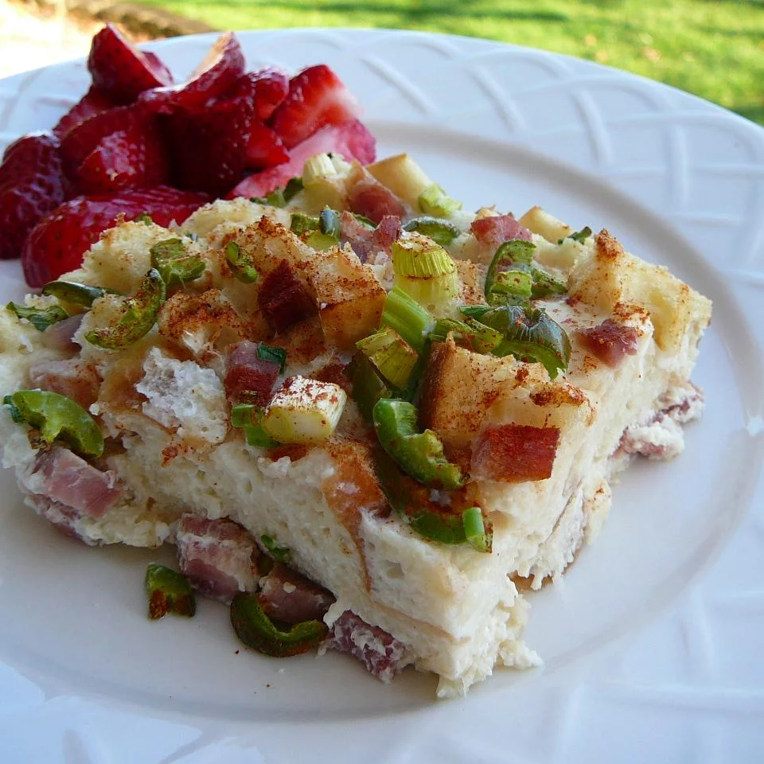

Eggs Benedict Casserole
Overnight Eggs Benedict! Easy to make ahead, perfect for brunch or a special occasion or overnight house guests

Ingredients
- cooking spray
- 8 large eggs
- 2 cups milk
- 3 green onions, chopped
- 1 teaspoon onion powder
- 1 teaspoon salt
- 3/4 pound Canadian bacon, cut into 1/2-inch dice
- 1/2 teaspoon paprika
- 1 (.9 ounce) package hollandaise sauce mix
- 1 cup milk
- 1/4 cup margarine
Directions
- Spray 9x13-inch baking dash with cooking spray
-
Whisk eggs, 2 cups milk, green onions, onion powder, and salt together in a large
bowl until well mixed
-
Layer half the Canadian bacon in the prepared baking dish. Spread English muffins
over meat and top with remaining Canadian bacon. Pour eggs mixture over casserole.
Cover baking dish with plastic wrap and refrigerate overnight.
-
Preheat the oven to 375 degrees F (190 degrees C)
-
Sprinkle casserole with paprika; cover with aluminium foil
-
Bake in preheated oven until eggs are nearly set, about 30 minutes; remove foil.
Continue baking until eggs are completely set, about 15 minutes.
-
Whisk hollandaise sauce mix with 1 cup milk in a saucepan. Add margarine and bring
to a boil, stirring frequently. Reduce heat to medium-low, simmer, and stir until
thickened, about 1 minute. Drizzle sauce over casserole to serve.
Nutrition Facts
Pre Serving: 281 calories; protein 17.5g; carbohydrates 21.2g; fat 14.1g; cholesterol 174.4mg;
sodium 1053.3mg.
For more ingredients check out the following links: